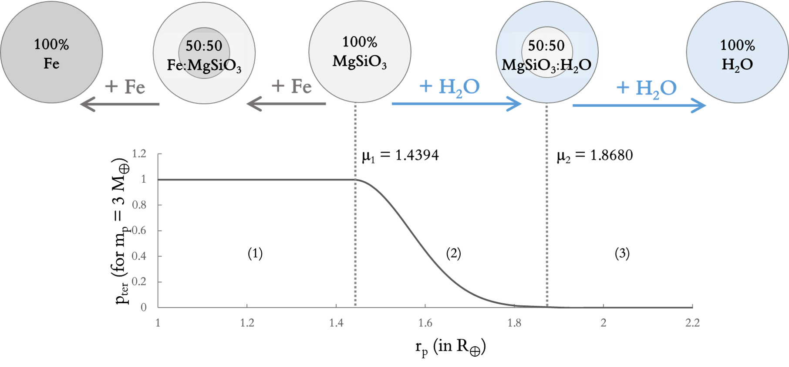
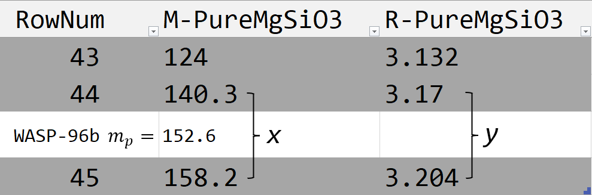

Perincian Kode
Contents
Perincian Kode¶
Libraries import declarations¶
import pandas as pd
import math
from scipy import interpolate
Definition of constants and variables¶
Some common physical constants, mainly used to calculate maxFlux (the upper bound of energy flux received by a planet that allows it to be habitable according to Pierrehumbert (2015)):
BIGG = 6.67428e-11 # Gravitational constant
PI = 3.1415926535
A = 0.7344 # Pierrehumbert's Constant
SB = 5.670373e-8 # Stefan-Boltzmann Constant
LH2O = 2.425e6 # Latent Heat Capacity of Water
RGAS = 461.5 # Universal Gas Constant
PLINE = 1e4
PREF = 610.616 # Reference Pressure
TREF = 273.13 # Reference Temperature
K0 = 0.055 # A constant in Runaway Greenhouse calculation
Boundaries for albedo values:
ALBMINELSE = 0.05 # General lower bound
ALBMAXELSE = 0.8 # General upper bound
ALBMING = 0.25 # Lower bound for planets orbiting G-type stars
ALBMAXM = 0.35 # Upper bound for planets orbiting M-type stars
The counterpart to maxFlux (unlike maxFlux, MINFLUX is a constant that does not depend on a planet’s properties)
MINFLUX = 67
Definitions of units of measurement, mainly used to convert exoplanet.org data into SI units:
MEARTH = 5.972186e24 # Earth mass in kilograms
REARTH = 6378100 # Earth's radius in meters
S0 = 1362 # Solar constant in watts per square meter
MSUN = 1.988416e30 # Solar mass in kilograms
RSUN = 6.957e8 # Solar radius in meters
LSUN = 3.828e26 # Solar luminosity in watts
RJUP = 7.1492e7 # Jovian radius in meters
MJUP = 1.8982e27 # Jovian mass in kilograms
AU = 1.496e11 # The astronomical unit in meters
Definition of functions¶
1) A function to calculate the probability distribution of orbital eccentricity¶
Original probability distribution of eccentricity (from the original code, not used in M-HITE).¶
Note how it differs from the new one. In the explanation for the algorithm section (previous page), this is the function p(e).
pofe = 'probability of e'
def pofe(ecc):
return 0.1619 - 0.5352*ecc + 0.6358*ecc*ecc - 0.2557*ecc**3
New probability distribution of eccentricity¶
Unlike the original, this new function uses known eccentricity data from exoplanet.org, but retains the form of a probability distribution.
mu is the uncertainty of the eccentricity value (either from the ECCLOWER or ECCUPPER columns in the data input file).
def pofe(ecc,mu,sigma):
return ((sigma*math.sqrt(2*math.pi))**(-1))*math.exp(-(((ecc-mu)**2)/(2*sigma**2)))/1000
2) A function to calculate the probability of a planet’s terrestriality¶
To predict a planet’s composition, M-HITE uses a model developed by Zeng-Sasselov (ZS) (2013). This model assesses the density of a planet to determine its place in a spectrum of combination between three substances: Fe (iron), MgSiO3, and H2O.

The plot above shows such a probability function \(p_{ter}\). Note that this particular function is specific to a planet with a mass of 3 Earth’s masses (M🜨). Planets with different masses have different distributions.
For any planet, a terrestriality chance of not zero is only possible when its radius is smaller than \(\mu_2\) (mu2). Moreover, if the radius is smaller than \(\mu_1\) (mu1), the terrestriality chance is valued as 1. These two constants, mu1 and mu2 are planet-specific.
The purpose of the code in this section is: 1) to determine the upper and lower bounds (mu1 and mu2) of the ‘terrestrial range’ for a given planet, and then, 2) to assess where the planet’s radius fall between those boundaries and determine the planet’s probability of being terrestrial.
The code uses values from a CSV table adapted from the dataset of Zeng-Sasselov (2013). This table is imported to a panda dataframe in the ‘Zeng-Sasselov boundaries input’ subsection below on this page. and will be called as ZS table from here onward.
Calculation of the lower bound (mu1)¶
For any given planet of mass mp, the lower bound of the ‘terrestrial range’ is defined as the radius that the planet would have if it was composed of pure MgSiO3.
The ZS table contains several columns, two of them are labeled ‘M-Pure-MgSiO3’ and ‘R-Pure-MgSiO3’. The values stored in these columns are mass and radius values in units of M🜨 and R🜨, respectively. Each row of these two columns is a pair of mass-radius values that represents a planet of 100% MgSiO3.
|
|---|
A peek inside the ZS table |

For example, according to this model, a planet with a mass of 0.00623 M🜨 and a radius of 0.2029 R🜨 is considered to be composed of 100 percent MgSiO3. That means, any theoretically existing planets with that exact mass would have 0.2029 as its mu1.
Let’s say that we wish to find mu1 for exoplanet WASP-96 b (mass: 152.6 M🜨; radius: 13.45 R🜨). This requires us to find the radius of WASP-96 b if it were a planet of pure MgSiO3.
If the exact value of WASP-96 b’s mass is present in the ‘M-Pure-MgSiO3’ column, the process would be a straigtforward one: mu1 is its corresponding value in ‘R-Pure-MgSiO3’ column (i.e. the radius value that is in the same row as its mass).
More often than not, a planet’s mass is not present in the column, such as in the case of WASP-96 b here, so we have to interpolate to approximate in-between values. Unfortunately, although the dataset is graphically algorithmic, it’s not advisable to set up a global regression equation due to low accuracy. In the graphic below, the thick data points are values from the ZS table, while the dotted line is the plot of a logarithmic regression equation. It can be seen that especially for large radius, the approximation veers quite far from the actual value.

M-HITE solves this problem by using piece-wise linear interpolation.
Continuing the aforementioned example, we do this by first finding the bracket in the ‘M-Pure-MgSiO3’ column in which WASP-96 b’s mp is contained. The endpoints of this bracket are then used as input for a linear polynomial (uses a function from the python scipy package).

The picture above shows a peek inside the ZS table and the ‘bracket of interest’ for WASP-96b.
To expound on the steps that the code goes through in the process of finding these endpoints:
Suppose we have already iterated through the first 43 rows of the ‘M-Pure-MgSiO3’ and have not found a value bracket that contains the mass of WASP-96 b, mp = 152.6.
We now compare mp to the value in the 44th row, which is 140.3 and still smaller than mp = 152.6. It means that this bracket, formed by the value in the 44th row and its predecessor, is not our bracket of interest.
So we go forward in the list and compare mp to the value in the 45th row, which is 158.2 and larger thann mp. It means that the mass of WASP-96 b is contained between this row and its predecessor–this is our bracket of interest.
The next step is to create an interpolation function:
f = interpolate.interp1d(x, y, kind='linear', assume_sorted=True)
wherein x is an array containing the endpoints of the aforementioned ‘M-Pure-MgSiO3’ bracket and y is an array containing the corresponding values from the ‘R-Pure-MgSiO3’ column.
The final piece of code looks like this:
mu1 = f(mPlanet)
wherein mPlanet is the mass of the planet, which in WASP-96b’s case is 152.6.
Calculation of the (mu2)¶
Similar to that of mu1 but uses these columns: ‘R-MgSiO3-H2O-5050’ and ‘M-MgSiO3-H2O-5050’.
Calculation of terrestriality probability¶
This part is fairly straightforward. We already have the lower and upper boundaries (mu1 and mu2), and the only thing left to do to determine the terrestriality probability is to assess the actual radius of the planet compared to these boundaries. The assessment criteria and results are summarized in this table below.
Planet’s radius in relation to the boundaries |
Probability of being terrestrial |
|---|---|
\(r_{p}≤\mu_1\) |
\(p_{ter} = 1\) |
\(\mu_{1} < r_{p} < \mu_2\) |
\(1 < p_{ter} < 0\) |
\(r_{p} \geq \mu_{2}\) |
\(p_{ter} = 0\) |
The code¶
# Start of the function definition
def p_ter (mPlanet,rPlanet,exoName):
# Convert the unit to Earth's masses and radii
mPlanet = mPlanet/MEARTH
rPlanet = rPlanet/REARTH
## (the Zeng-Sasselov dataset table uses Earth's mass and radius as the units,
##while the data input from exoplanets.org uses SI)
# Calculate mu1
# Initialize mu1 value
mu1 = 0.0
# Initialize temporary variables to hold a mass/radius value
#from the (i-1)th row of the ZS table
mZSimin1 = 0
rZSimin1 = 0
# This block iterates through the the 'M-Pure-MgSiO3' column
#to find the bracket that contains mPlanet value
for i in rowNum:
# Initialize temporary variables to hold a mass/radius value
#from the i-th row of the ZS table
mZSi = zs.loc[i, "M-PureMgSiO3"]
rZSi = zs.loc[i, "R-PureMgSiO3"]
# Comparing mPlanet to the current value of mZSi
if mPlanet == mZSi:
mu1 = rZSi
break
elif mPlanet > mZSi:
mZSimin1 = mZSi
rZSimin1 = rZSi
else: # if mPlanet < mZSi --> we have found the correct bracket
f = interpolate.interp1d(zs.loc[(i-1):(i), "M-PureMgSiO3"], zs.loc[(i-1):(i), "R-PureMgSiO3"], kind='linear', assume_sorted=True)
mu1 = f(mPlanet)
break
# Calculate mu2
mu2 = 0.0
mZSimin1 = 0
rZSimin1 = 0
for i in rowNum:
mZSi = zs.loc[i, "M-MgSiO3-H2O-5050"]
rZSi = zs.loc[i, "R-MgSiO3-H2O-5050"]
if mPlanet == mZSi:
mu2 = rZSi
break
elif mPlanet > mZSi:
mZSimin1 = mZSi
rZSimin1 = rZSi
else:
f = interpolate.interp1d(zs.loc[(i-1):(i), "M-MgSiO3-H2O-5050"], zs.loc[(i-1):(i), "R-MgSiO3-H2O-5050"], kind='linear', assume_sorted=True)
mu2 = f(mPlanet)
break
# Calculate sigma1
sigma1 = (mu2-mu1)/3
# Calculate the terrestrial probability
p_ter = 0
if rPlanet <= mu1:
p_ter = 1
elif rPlanet >= mu2:
p_ter = 0
else: # uses a pseudo-gaussian function
p_ter = math.exp(-(0.5)*((rPlanet-mu1)/sigma1)**2)
return p_ter
Data input¶
# Import exoplanet data from a CSV file into a pandas dataframe
exo = pd.read_csv (r'exoplanets.csv', low_memory=False)
# Set the column with the header NAME to be used as an index to identify row
exo = exo.set_index("NAME", drop = False)
# Extract names of planets as a list (to be used as a calling list)
exoList = pd.DataFrame(exo, columns=['NAME'])
exoList = exoList['NAME'].values.tolist()
Zeng-Sasselov boundaries input¶
# Import CSV of Zeng & Sasselov boundaries
zs = pd.read_csv (r'zeng-sasselov_boundaries.csv')
# Set index using the RowNum column
zs = zs.set_index("RowNum", drop = False)
# Extract the column "RowNum" as a list (to be used as a calling list)
rowNum = pd.DataFrame(zs, columns=['RowNum'])
rowNum = rowNum['RowNum'].values.tolist()
Main subroutine to determine the habitability index value¶
habIndex = []
habIndexWithName = []
for exoName in exoList:
# Extract data of individual planets
# HOST STAR PROPERTIES
# Stellar radius (in solar radii)
rStar = exo.loc[exoName, "RSTAR"]
## Convert to SI
rStar = rStar*RSUN
# Stellar temperature (in Kelvin)
teffStar = exo.loc[exoName, "TEFF"]
# Stellar luminosity
luminosity = 4*math.pi*rStar*rStar*SB*teffStar**4
# PLANET PROPERTIES
# Planetary radius (in Jovian radii)
rPlanet = exo.loc[exoName, "R"]
## If R is not available, calculate it from transit depth
if math.isnan(rPlanet) == 1:
depth = exo.loc[exoName, "DEPTH"]
rPlanet = math.sqrt(depth)*rStar
## Convert to SI
rPlanet = rPlanet*RJUP
# Planetary mass (in Jovian masses)
mPlanet = exo.loc[exoName, "MASS"]
## If MASS is not available, calculate it from a common scaling law [...]
##from the original HITE
if math.isnan(mPlanet) == 1:
if rPlanet/REARTH <= 1:
mPlanet = ((rPlanet/REARTH)**3.268)*MEARTH
elif rPlanet/REARTH > 1:
mPlanet = ((rPlanet/REARTH)**3.65)*MEARTH
## Convert to SI
mPlanet = mPlanet*MJUP
# Surface planet gravity (in SI)
surfGrav = BIGG*mPlanet/(rPlanet**2)
# ORBITAL PROPERTIES
# Orbital eccentricity
ecc = exo.loc[exoName, "ECC"]
# Measurement uncertainty of orbital eccentricity
## Upper bound (relative from E)
eccUpRel = exo.loc[exoName, "ECCUPPER"]
### If measurement uncertainty is not available, assign it as 0.01
if math.isnan(eccUpRel) == 1:
eccUpRel = 0.01
### Upper bound (absolute)
eccUpper = ecc + eccUpRel
## Lower bound (relative from E)
eccLowRel = exo.loc[exoName, "ECCLOWER"]
### If measurement uncertainty is not available, assign it as 0.01
if math.isnan(eccLowRel) == 1:
eccLowRel = 0.01
###Lower bound (absolute)
eccLower = ecc - eccLowRel
# Orbital semi-major axis (in AU)
semiAxis = exo.loc[exoName, "A"]
## Convert to SI
semiAxis = semiAxis*AU
# Calculate the upper and lower bounds of F_OLR [...]
#that would allow for surface liquid water to exist
pStar = PREF*math.exp(LH2O/(RGAS*TREF))
# Upper bound: maximum F_OLR
maxFlux = A*SB*(LH2O/(RGAS*math.log(pStar*math.sqrt(K0/(2*PLINE*surfGrav)))))**4
# Lower bound: minimum F_OLR is the constant MINFLUX
minFlux = MINFLUX
# Probability of the planet being terrestrial
p_ter = p_ter(mPlanet,rPlanet,exoName)
# Albedo (new)
## Boundaries
albMin = ALBMINELSE
albMax = ALBMAXELSE
## Special conditions
### For planets with M-type host star
if teffStar >= 2300 and teffStar <=3800:
albMax = ALBMAXM
### For planets with G-type host star
elif teffStar >= 5370 and teffStar <=5980:
albMin = ALBMING
# Calculate F_OLR
## Albedo increments
da = 0.01
## Eccentricity increments
de = 0.01
## Sum of pofe (probability of eccentricity);
### (is used to normalize the index value, later)
### Initialized to 0
pofeSum = 0
### Sum of how many instances of F_OLR meets the requirements for
###the planet to have surface liquid water. Each instances will then be
###multiplied by the probability of its eccentricity (pofe)
### Initialized to 0
habFact = 0
### Incoming stellar radiation (instellation)
flux0 = luminosity/(16*math.pi*semiAxis*semiAxis)
# Calculate the habitability index
## Iterate through the albedo & eccentricity 2D matrix
a = albMin
while a < albMax:
e = eccLower
while e < eccUpper:
flux = flux0*(1-a)/math.sqrt(1-e*e)
pofeSum = pofeSum + pofe(e, ecc, eccUpRel)
if flux < maxFlux and flux > MINFLUX:
habFact = habFact + pofe(e, ecc, eccUpRel)
e = e + de
a = a + da
if ecc > 0.8:
H = 0.0
elif pofeSum != 0:
H = (habFact/pofeSum)*p_ter
else: # in the case of error; might be better to replace this with a throw exception statement
H = 0.0
habIndex.append(H)
habIndexWithName.extend([exoName, ",", H])
print(exoName, H)
# Append the result (planet's name and index value) to a .txt file in the same folder
with open('out.txt','w') as f:
i = 1
for a in habIndexWithName:
if i == 3:
print(a, file=f)
i = 1
else:
print(a, file=f, end="")
i += 1